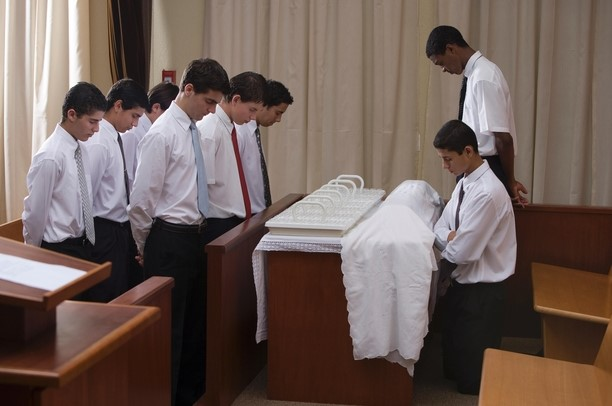

Buena Vista YSA
The Church of Jesus Christ of Latter-day Saints
Welcome to the YSA Buena Vista Ward page! We are thrilled to have you here, where you can find comprehensive information about both upcoming and past events. Our aim is to foster a sense of community and spiritual growth, and we wholeheartedly invite you to be an integral part of this journey.
Activities and Events
Throughout the year, we organize a variety of events and activities that are not only enriching but also enjoyable. These events are designed to cater to various interests and provide ample opportunities for you to connect with like-minded individuals in our community. Whether it's a thought-provoking discussion, a heartwarming social gathering, or a fulfilling service project, there's something for everyone.
While many of our events are typically hosted in the comforting embrace of our church building, we also occasionally venture beyond its walls, exploring new settings and experiences. These off-site gatherings allow us to embrace diversity and strengthen the bonds of friendship and camaraderie within our community.
Sacrament and Meetings
One of the core highlights of our weekly calendar is the Sunday Sacrament meetings, a cornerstone of our spiritual practice. These meetings are a sacred time for us to come together as a congregation, reflect on our faith, and renew our commitment to the teachings of Jesus Christ. During each meeting, we are privileged to hear from two dedicated speakers who share their insights and experiences, fostering a deeper understanding of our faith and its relevance in our daily lives.
Our dedicated leaders facilitate these meetings with reverence and compassion, ensuring that every attendee feels welcomed and valued. Following the Sacrament meeting, we offer an engaging one-hour session of Sunday School, where we collectively explore the profound teachings of the scriptures. Through these enlightening discussions, we aim to foster a deeper spiritual connection with our Savior, Jesus Christ, and cultivate a stronger relationship with our eternal Father.
Our invitation
We firmly believe that active participation in these events and gatherings will not only enrich your spiritual journey but also provide you with a strong support system within our community. By actively engaging in these activities, you will have the opportunity to forge meaningful connections, share your experiences, and contribute to the collective growth and well-being of our YSA Buena Vista Ward.
In closing, we extend a heartfelt invitation to you to join us in this fulfilling journey of spiritual growth and communal engagement. Your presence and participation are highly valued, and we look forward to welcoming you into our vibrant community with open arms. Together, let us embark on a path of spiritual discovery and shared experiences. We eagerly anticipate the opportunity to have you join us in this fulfilling and enriching endeavor.

President Russel M. Nelson.
First and foremost, each person is a child of God.
make sure that your eyes are wide open to the truth that this life really is the time when you get to decide what kind of life you want to live forever, now is your time ‘to prepare to meet God.’ If you choose to make covenants with God and are faithful to those covenants, you have the promise of ‘glory added upon [your head] for ever and ever.’”
three fundamental truths will help young adults prepare their course:
First: Know the truth about who you are.
Second: Know the truth about what Heavenly Father and His Son have offered you.
And third: Know the truth related to your conversion.
Read the article by Mary Richards